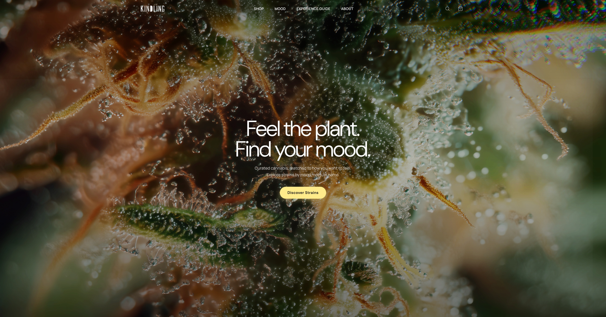
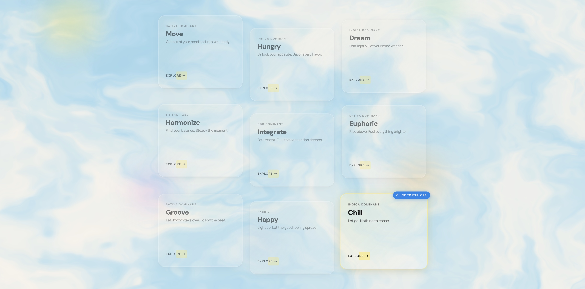
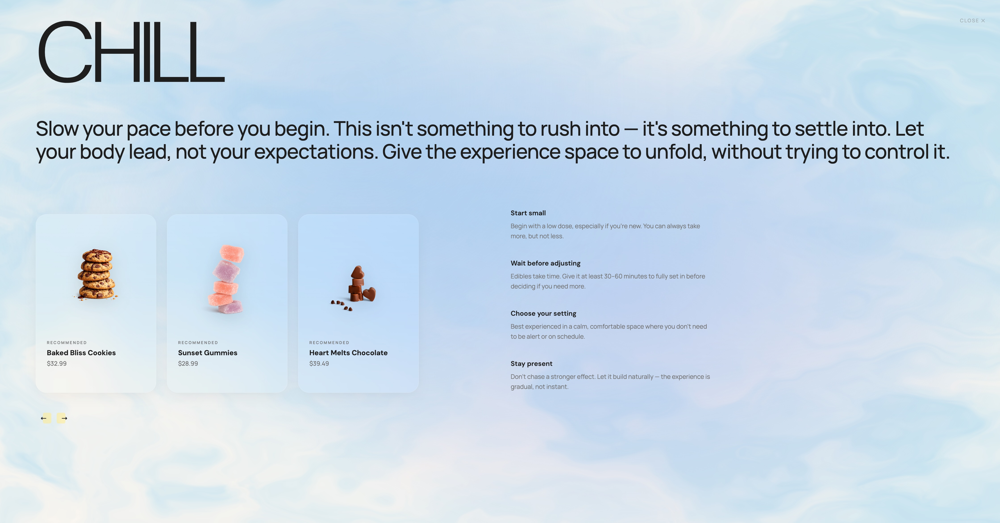

The category felt over-coded in two directions: clinical utility or underground rebellion. What was missing was guidance for people who were actually trying to feel something specific.

The interface reorganized discovery around mood states — letting people enter through experience rather than product jargon.


Note: Kindling was a real project. The brand strategy, mood system, and design direction are original work. Over time, the live site moved away from the original vision. This interactive prototype was rebuilt to honour that vision, and to represent the full range of my skills in this portfolio.